space
- Fusion 360: link.
THE GROUP
The group consists of myself, Stefán Jónsson, my great friend Jóel Ingason and my colleague, Ísak Ernir Sveinbjörnsson.
THE OBJECTIVE OF OUR LABOR
The objective for this group was to design and mill a large object. This page covers my personal contribution towards this objective.
My contribution to the project was based on the design of the model and creating the layout. This was done in collaboration with Jóel Ingason. Every member in the group also contributed to the assembly, milling and sanding of the marvelous model.
PREPARATION
My experience with Fusion 360 enabled me to just launch the software and begin sketching.
SOFTWARE AND TOOLS
Fusion 360
Fusion 360 is a cloud-based CAD/CAM tool for collaborative product development.
DESIGN - INSPIRATION
We got inspiration from here.
Here is an image of the inspiring stool.
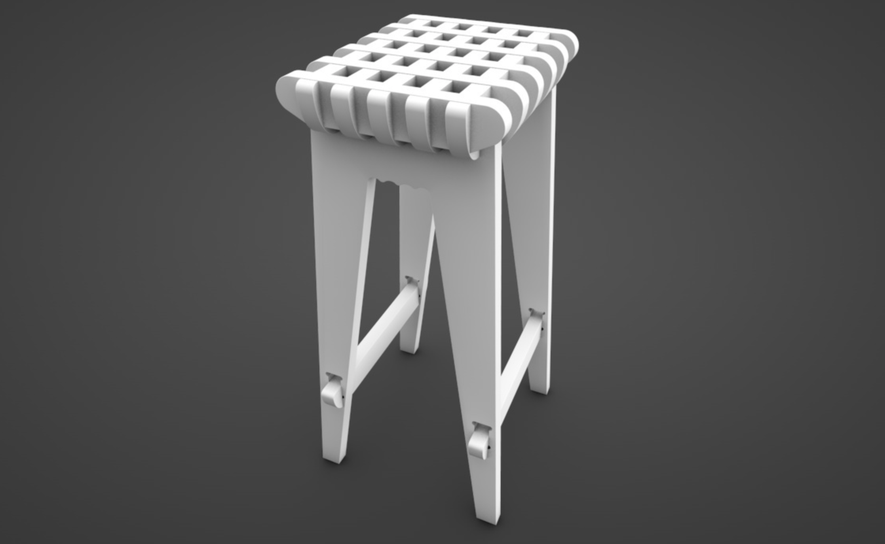MODELLING
We started with defining all the parameters we were going to use. They are as follows.
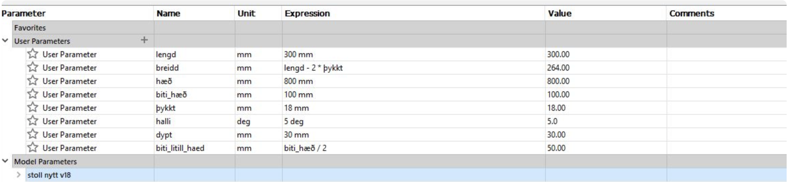Then we started off by sketching, using the parameters we fully defined. The first sketch is as follows.
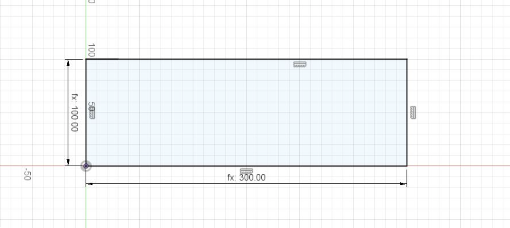Then we had to extrude the sketch and make a slot. We did that by extruding the sketch using our "Þykkt" parameter so a slot was drawn onto the face of the object. Image below.
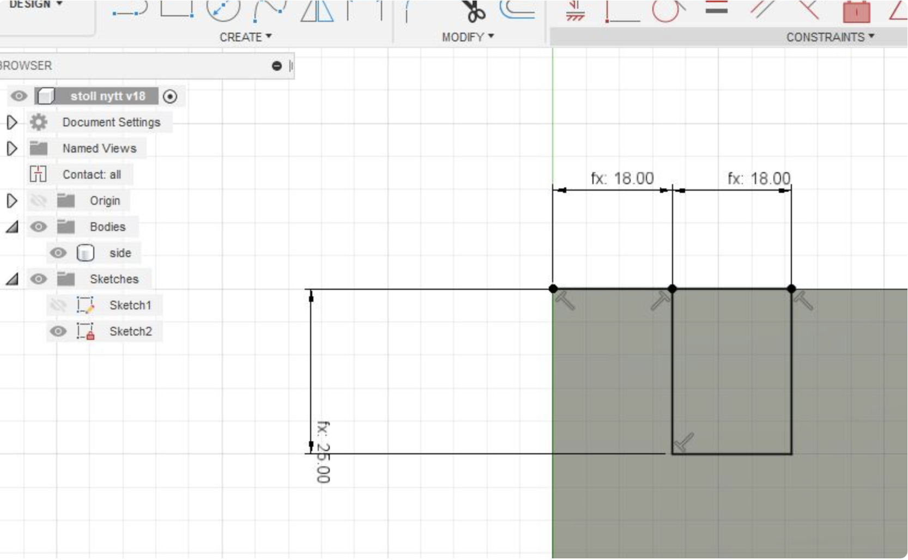Then we used a box pattern to repeat the extrusion of the slot on the other side of the panel. Image below.
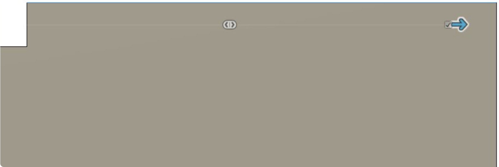Next we drew a sketch of a slanted slot, with a slant of our parameter "halli" degrees onto the face of the panel. Thes is the slot that the fet of the stool wil eventually slide into. Image below.
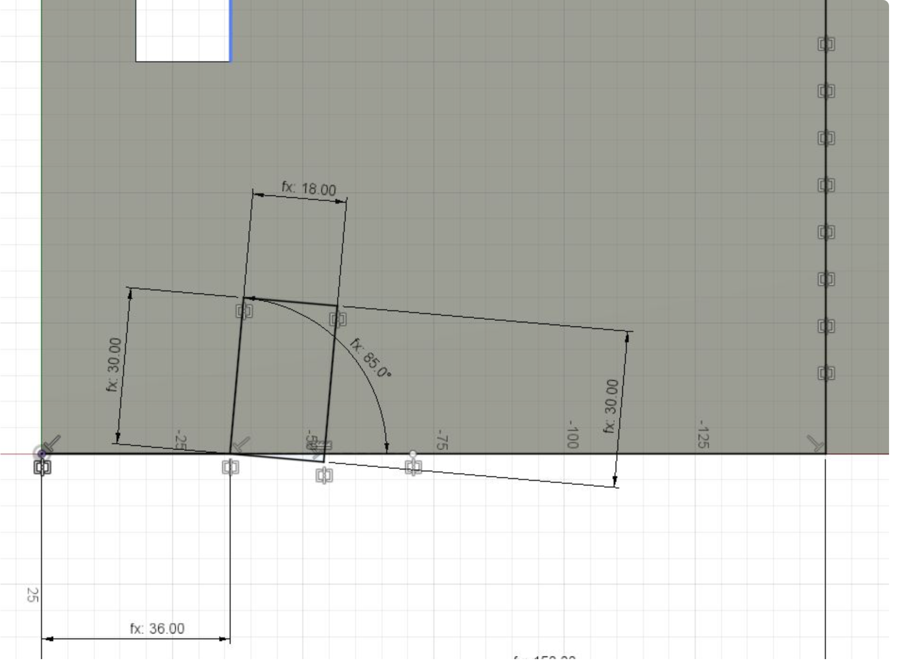We then used the mirror tool to duplicate the drawing on the other side of the panel and extruded the cuts. Image below.
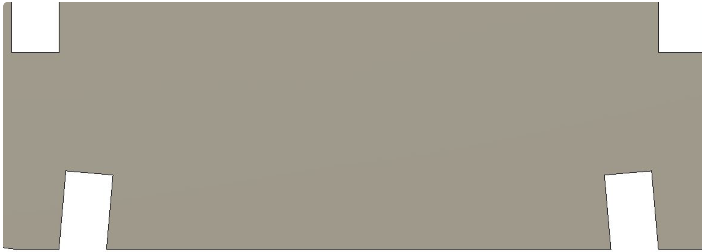Then we had to add more slots. We did that by using the same process as before by making a sketch of another slot using our parameter "dypt" and used the box pattern to repeat the extrusion along the panel. Image below
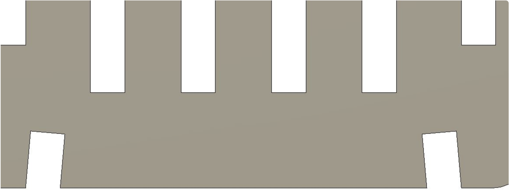Now we had to make another panel. A sketch was drawn of another panel that is slotted into the previous one. This one is again sketched using the parameters we defined and after the extrusion of the base panel a slit is made that is repeated along the edge. Image below.
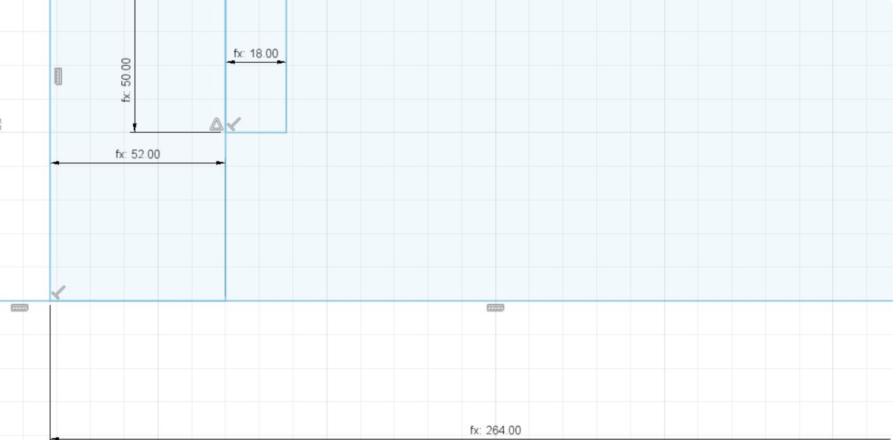After we extruded the panel we used the fillet tool on the corners and the box pattern to repeat the slots. Image below.
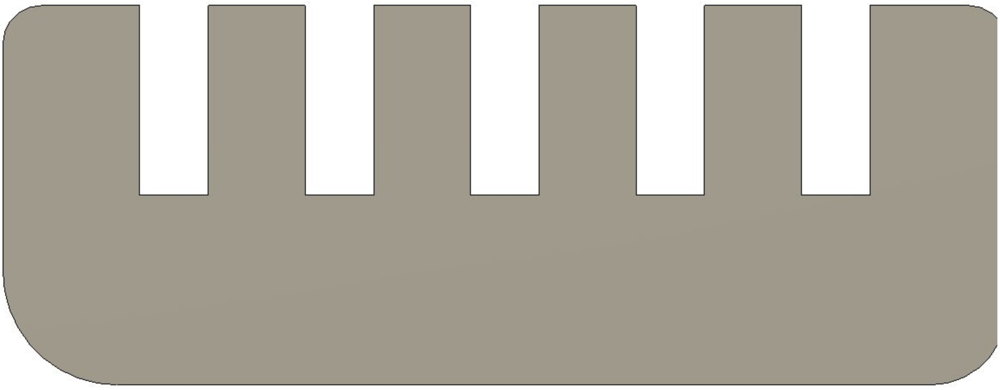Now we had to make the small panel. We did that by drawing a simple sketch of the smallest panel using our defined parameters. Image below.
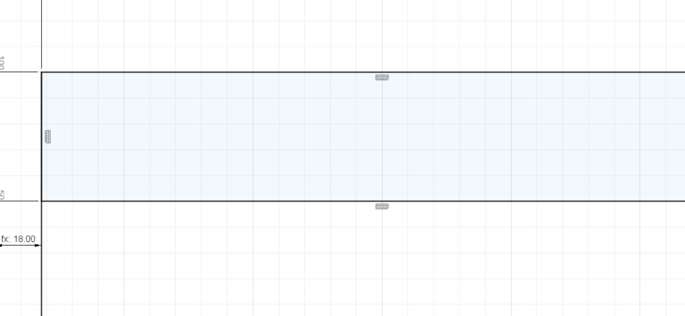Then we extruded the sketch, made slots using the aforementioned method and used the fillet tool on the corners. Image below.
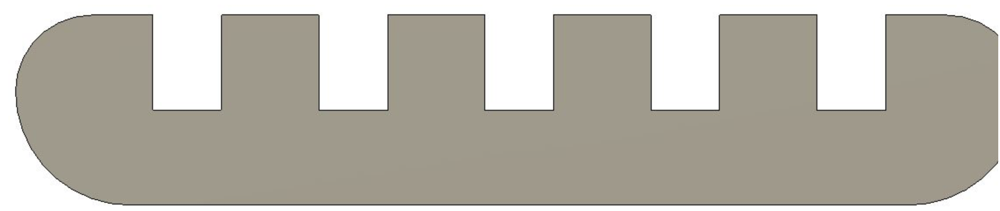Now we had to make the legs of the stool. We started off by drawing a sketch of the feet of the stool and defined various lengths using our parameters. Image below.
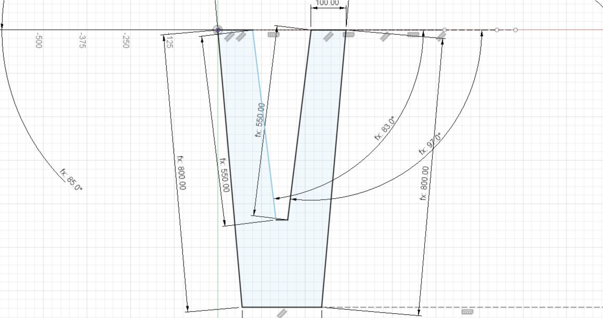Then we drew a hole, after extruding the sketch, that can be slotted using a panel. To draw the hole on the other side of the leg we mirrored the sketch over the center line of the chair. Image below.
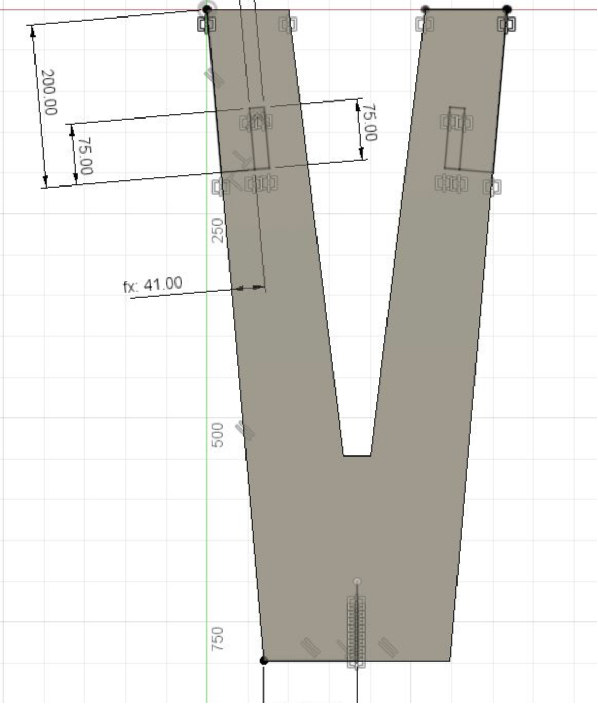Next we drew a sketch of the top slots that the top part of the stool slides into.
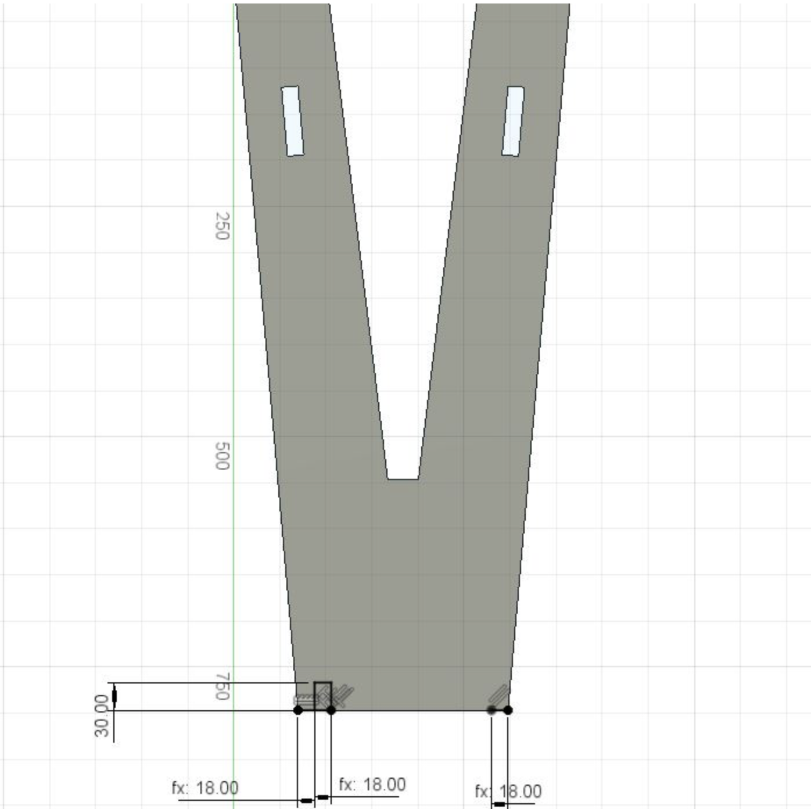Using the box pattern feature we then repeated the extrusion along the top of the leg. Image below.
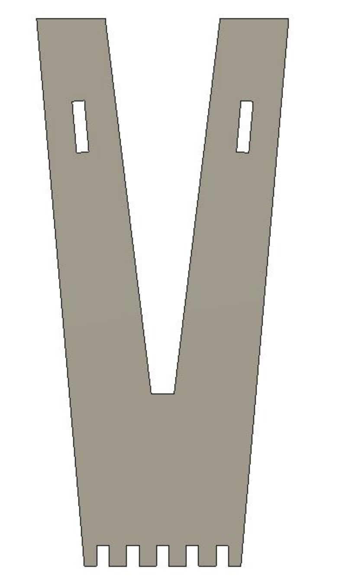Now we had to consider the "fixer" that slots between the legs of the stool. The sketch of the fixer turned out to be quite complicated. The reason being that in order to correctly estimate the length of the fixer, some trigonometry had to be used in the calculations. After the correct length was found, two slanting slots were directly drawn into the sketch and the fillet tool used on the corners. Image below.
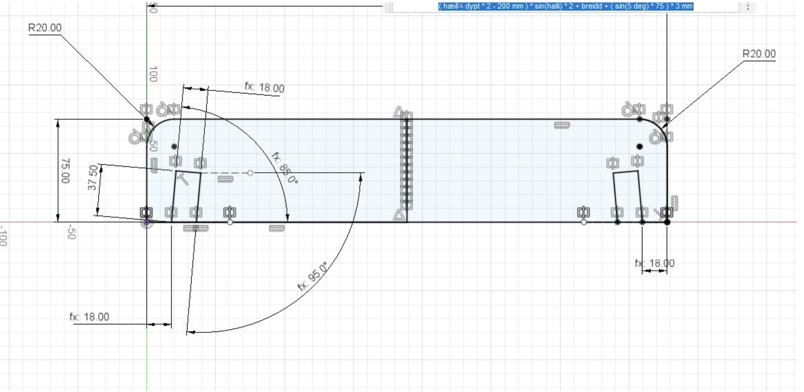The fixer was then extruded. Image below.

Once all the parts had been drawn, multiple copies of them were made and turned into components. The components were then assembled using the "joints" features. The final 3D model of the stool is seen below.
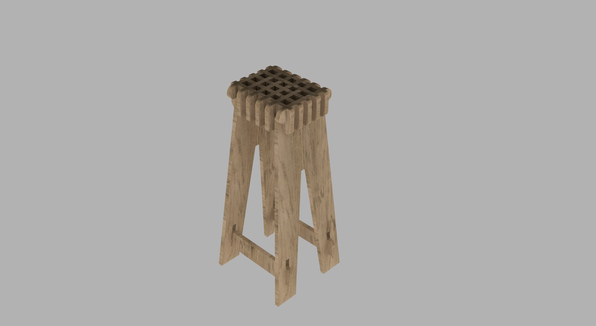 ------After the parts were done and checked for the fit, we took all the components and layed them down. We then projected the faces of the parts onto a new sketch and exported that sketch as a DXF file. Image below.
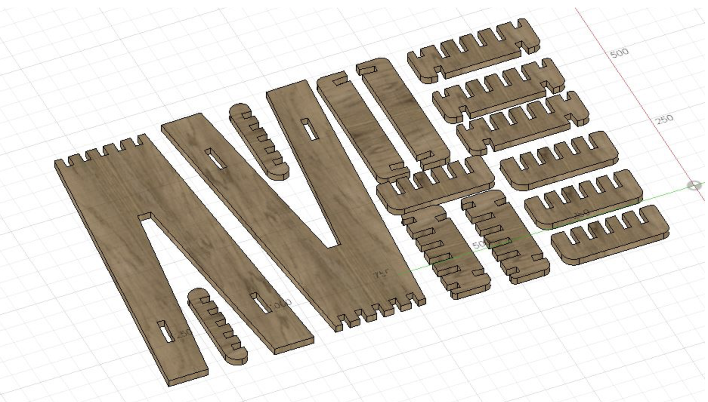 ------The Fusion 360 file, DXF file and VCarve files can be found here. Github link to model
PREPARING THE PARTS FOR CNC MILLING
Another member of the group, Ísak Ernir, prepared the files for milling in CNC using the VCarve software. A link explaining the procedure can be found here.
CNC MILLING AND ASSEMBLY OF THE STOOL
The assembly and CNC milling of the stool can be found on our joint group website: here.